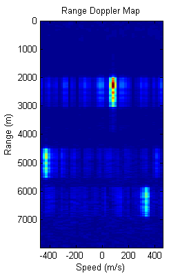
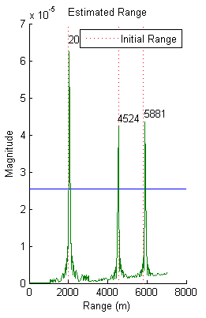
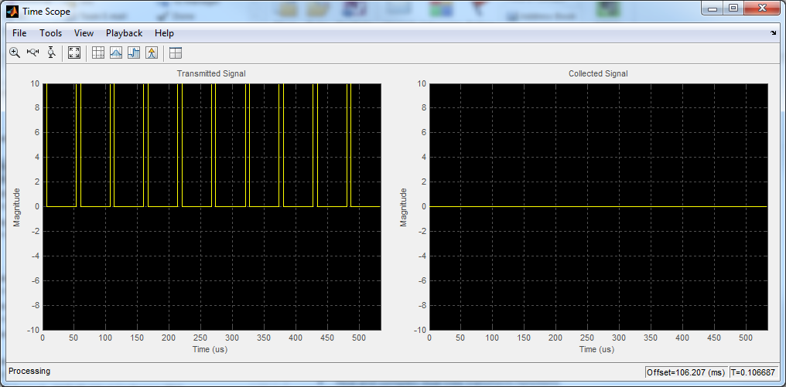

Contents
% Copyright 2013 The MathWorks, Inc
Ground-Based Monostatic Radar - Range and Doppler Estimation
This example shows how to model a ground-based monostatic pulse radar to estimate the range and speed of fluctuating targets.
Model
maxrange = 8000; % Maximum range (m) range_res = 50; % Range resolution (m) pd = 0.9; % Probability of detection pfa = 1e-6; % Probability of false alarm nint = 48; % Number of pulses to integrate % The transmitted waveform is a chirp. An S-band pyramidal antenna array is % used in this case. The antenna is mounted on a vehicle moving at 67 mph % (30 m/s). apos = [0; 0; 0]; % Antenna position avel = [30*cos(30);30*sin(30);0]; % Antenna velocity fc = 3e9; % Operating frequency sAnt = lowProfileArray('FrequencyRange',[2/3*fc 4/3*fc],'ViewArray',false); [sWav,sTx,sAntPlat,sRad,fs,prf] = setupTx(maxrange,range_res,pd,pfa,nint,sAnt,apos,avel,fc); % Three targets are set in motion in a free space environment. tgtRCS = [1.2 1.1 1.05]; tgtpos = [2000 4560 5825; 0 0 0; 0 0 0]; tgtvel = [100 -400 350;0 0 0; 0 0 0]; % m/s [sTgt,sTgtMotion,sChan] = setupTheater(tgtRCS,tgtpos,tgtvel,fc,fs); % On the receiver side, matched filter, time-varying gain control and % non-coherent pulse integration are applied to improve SNR. A % range-Doppler map is generated and a Neyman-Pearson (NP) decision rule is % used to achieve the desired Pfa. nf = 0; % Noise figure fast_time = 0:1/fs:1/prf-1/fs; % Fast time grid range_gates = physconst('LightSpeed')*fast_time/2; % Range gates pulses = zeros(numel(fast_time),nint); % Pre-allocate intpulses = zeros(numel(fast_time),1); [sCol,sRx,sRD,sMFilt,sTVG,threshold] = setupRx(nint,nf,pfa,maxrange,range_gates,sWav,sAnt,fc);
Simulate
rsig = zeros(336,3); ang = zeros(2,3); for m = 1:2000 [s,tx_status] = step(sTx,step(sWav)); % Transmit pulse [apos,avel] = step(sAntPlat,1/prf); % Move antenna for n = 1:3 % For each target [tpos,tvel] = step(sTgtMotion{n},1/prf); % Move target [~, ang(:,n)] = rangeangle(tpos,apos); % Angle between antenna and target tsig = step(sRad,s,ang(:,n)); % Radiate signal tsig = step(sChan{n},tsig,apos,tpos,avel,tvel); % Propagate two ways rsig(:,n) = step(sTgt{n},tsig,true); % Reflect off target end rsig = step(sCol,rsig,ang); % Collect rsig = sum(rsig,2); % Beamform nn = mod(m-1,nint)+1; pulses(:,nn) = step(sRx,rsig,~(tx_status>0)); % Receiver pre-amp pulses(:,nn) = step(sTVG,pulses(:,nn)); % Time varying gain [rdmap,rgrid,sgrid] = step(sRD,pulses,sMFilt.Coefficients); % Range-Doppler estimate pulses(:,nn) = step(sMFilt,pulses(:,nn)); % Matched filter if nn == nint intpulses = pulsint(pulses,'noncoherent'); % Pulse integration [pmax,detect] = findpeaks(intpulses,'MinPeakHeight',sqrt(threshold)); % Detection tgtrange = range_gates(detect-(numel(sMFilt.Coefficients)-1)); % Range estimation end viewSignals end  